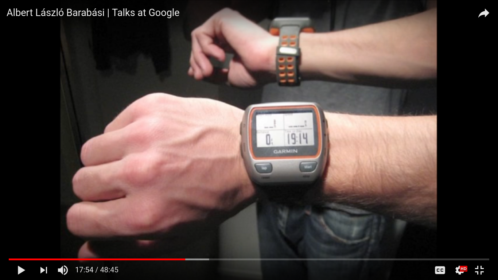

Is my mind tricking me to work more?!
A closer look at 365 days of an economic migrant’s life!
Ali
21-09-2017
Build your data from scratch?
Inspired by this talk of Albert-László Barabási at Google while introducing his book, “Bursts: The Hidden Patterns Behind Everything We Do” where he discussed how he was wearing a Garmin sports watch to track his movements (photo below);

And based on knowing myself and how lazy I can be, I set out a goal for myself. I have a positive experience from recording time of my activities when I face a deadline (e.g., deadlines I had for bachelor, master and PhD entrance exams that all were national level competitive exams requiring long term studies). This activity recording increases my efficiency and productivity.
Also, I think it gives me a good opportunity to better know myself. This way I get to know where and to what extent I can count on myself to keep my word to get the job done without distraction.
The most important promises are the ones we make to ourselves. So I decided to have an eye on everything I do for a period of more or less one year to analyze it and find out what are my work and life habits. What kind of trends do I follow? Is there any predictable trends happening like the ones Barabasi describes in his talk and book? This required a huge amount of honesty, because I was exactly recording what I was doing. Believe me, it is not an easy task to record the amount of time you waste.
The time period of activity recordings started from 24th of March 2016, to be exact at 10:30 a.m! I kept recording till 9:24 on June 27th 2017 for a total of 460 days.
In following lines, I am going to import the tabular data I have recorded and exported from Hamster time tracker which is an easy to use application. I have removed some activity descriptions and details that I didn’t want to share publicly, not to violate my privacy. But details of records, like start and end time, name of activity and category names I have added for easier analysis are not modified, you remember that honesty was the primary condition? So here we are.
Besides the time tracking data, the other ambitious goal is to import my Google searches data that I described in another post to be compared and analyzed comparatively to see if I can find meaningful trends.
Code to read data and have a look
Let’s read in the data (both 460 days time track data and my Google searches data) and have a look at the time track data (we previously had a descriptive analysis of Google searches here). Also we are going to do some manipulations in the activities data to be prepared for further analysis (described all in the comments in the code).
# clean the R workspace
rm(list = ls())
# Load libraries
# if you don't have them installed, write "install.packages("tidyverse")"
# tidyverse to allow us to manipulate data, clean it, plot it
require(tidyverse)
# jsonlite to allow us to work with "json" files which google exports
require(jsonlite)
# kniter, because I am going to use "kable" function in printing nicer tables
require(knitr)
# We are going to use "datatable" function from DT package to add sortable and interactive tables into the html output of this report
require(DT)
# we will need lubridate package to work with time data in more efficient and easier manner
require(lubridate)
# we are using scales library to be able to give pretty break points for every hour of 24 hours day on the plot with "scale_x_continuous" or "scale_y_continuous" function
require(scales)
# Import my 460 days activities data (time tracking)
activities_460_days <- read_csv("./data/time_track_data/time_track_one_aggregate_file.csv")
# adding a column with time spent on activities in hours to be more understandable (rounding hours not to have digits)
activities_460_days$duration_hours <- round((activities_460_days$duration_minutes / 60), digits = 0)
# I will filter out all the activities that have lasted less than 5 minutes
activities_460_days <- activities_460_days %>%
filter(duration_minutes > 4)
# filtering activities to only one full year based on dates I choose here
start_sample <- activities_460_days$start_time[[56]]
end_sample <- activities_460_days$start_time[[4079]]
# one full year activities
activities_460_days <- activities_460_days %>%
filter(start_time > start_sample & start_time < end_sample)
# I am going to add a new variable to recode category to only three groups to differentiate between work related activities and non work related ones, in a more brief way
activities_460_days$category_2cat <- NA
activities_460_days$category_2cat[activities_460_days$category %in% c("pro bono work", "Uni related", "Research works & thesis")] <- "Work"
activities_460_days$category_2cat[activities_460_days$category %in% c("Hobbies", "Unsorted")] <- "Hobby & other"
# Now let's have a look at 460 days activities
glimpse(activities_460_days)## Observations: 4,022
## Variables: 7
## $ activity <chr> "general think & planing or discussion", "Dat...
## $ start_time <dttm> 2016-04-01 09:34:00, 2016-04-01 10:19:00, 20...
## $ end_time <dttm> 2016-04-01 10:19:00, 2016-04-01 11:06:52, 20...
## $ duration_minutes <int> 45, 47, 60, 45, 172, 135, 17, 77, 15, 144, 37...
## $ category <chr> "Research works & thesis", "Research works & ...
## $ duration_hours <dbl> 1, 1, 1, 1, 3, 2, 0, 1, 0, 2, 1, 2, 1, 3, 1, ...
## $ category_2cat <chr> "Work", "Work", "Work", "Hobby & other", "Wor...# Import the Google searches data
# Here there is going to be a for loop to read all the json files you have downloaded from Google takeout
# Before, we need to build an R list to store the data so:
# an empty list to store all the time data we take out of each file
time_data_list <- list()
# We need to list all the files in the directory which have ".json" extension; to use this script on your own data, you will need to modify the directory url
json_file_urls <- list.files("./data/google_searches/", pattern = ".\\json", full.names = T)
# after listing the json files, we are going to read them one by one and make a data frame of the search time stamps in each of them
for (j in seq_along(json_file_urls)) {
# fromJSON is a function in Jsonlite package to read json files
tmp_json_txt <- fromJSON(txt = json_file_urls[j])
# call to bind_rows to make a dataframe of all the timestamps and store it as j element of our list
time_data_list[[j]] <- bind_rows(tmp_json_txt[["event"]][["query"]][["id"]])
}
# call bind_rows once more on all the elements of list we built above, which are the timestamps in each file, to be integrated in one complete dataframe
time_data <- bind_rows(time_data_list)
# increasing number of digits R is going to show us not to see time stamps in scientific form
options(scipen = 25)
# converting time stamps from character to double to be able to convert them to date later
time_data$timestamp_usec <- as.double(time_data$timestamp_usec)
# from now I will use "dplyr" data frame format which gives more possibilities to work with dataframe
time_data <- tbl_df(time_data)
# adding a column which will include clear (human readable time and date)
time_data <- time_data %>%
mutate(new_date = as.POSIXct(timestamp_usec/1000000, origin = "1970-01-01", tz = "GMT"))
# also adding two other columns to separate day from hours to use in visualizations
time_data <- time_data %>%
separate(col = new_date, into = c("day", "hour"), sep = " ", remove = F)
# convert day to "date" format R will understand
time_data$day <- as.Date(time_data$day)
# adding a column which assigns months of activity (to use later for monthly reports)
time_data$month <- floor_date(time_data$day, "month")
# also let's add month names "as words" to another column, it will come handy
time_data$month_name <- months(time_data$day)
# beside that, let's take "years" out as well and save them as another column which will be useful to draw meaningfull plots
time_data$year <- format.Date(time_data$day, "%Y")So I have recorded a total of 4022 activities. But after having a look at the results I was going to put in this report, I decided to filter the data to only one full year and get a more realistic picture when I am going to compare months, weeks and days later in this report; so now the starting date of this sample is 2016-04-01 09:34:00 and the end of it is 2017-03-31 23:57:00 so a time difference of 365 days. If I divide the number of activities to number of days, it can mean 11.03 activities are recorded a day, but, is this the right average amount? We will see more details in a moment!
Interesting questions to check!
Most & least active category & activity (frequency vs time spent)
First question I was interested to answer; “What was the activity I have done the most number of times?”, this question is asking about the “occurrences” of that activity. Another question can be focused on the “time spent” on activities to find the most and least time consuming ones. We see the answer to this questions in the table below.
# I will group activities based on category and name, and aggregate the frequency and time spent on them
highes_and_lowest_frequent_activities <- activities_460_days %>%
group_by(category, activity) %>%
summarise(frequency = n(), time_spent_minutes = sum(duration_minutes, na.rm = T), time_spent_hours = round((sum(duration_minutes, na.rm = T) / 60), digits = 0))
# Ten most frequent and time consuming activities
DT::datatable(arrange(.data = highes_and_lowest_frequent_activities, desc(frequency))[1:10, ], caption = "10 most frequent and 10 most time consuming activities (Sort based on 'frequency' or 'time_spent' columns by click)")After sorting above table based on ‘frequency’ or ‘time_spent’ columns (by clicking on the column names), one interesting fact gets revealed. I call it memory’s misleading recalls! I don’t know if it is a thing in Psychology and similar sciences or not, but with experience I have found out that my memory reminds (or emphasizes) some activities more than others, and when I think about those activities, I realize my memory tends to pick them based on the frequency of the times I have been doing them, not based on the time spent on them.
Let me put it in an example, imagine that in a long working day, I have spent two big shares of my time, in an uninterrupted manner, on my research activities, each for 3 hours. But during this day, for five times I had to check a social media page to follow-up news on an ongoing event, each time for 5-10 minutes.
At the end of the day, my perfectionist mind tricks me into believing that I have been checking that social media page a lot during the day and I haven’t worked much, while looking at the time spent on these activities we clearly see that they are not comparable.
Same happens when you sort the time spent and frequency of activities on the table above, the order of them changes in an interesting way, some activities come up or go down on the list. This is more obvious when you look at the summary table of categories below, when you sort it based on time spent, Research works is the first, when you sort based on the number of frequencies, Hobbies becomes first. So it means I have spent more time on my work activities, but the number of times I have been involved with my hobbies are more (although with shorter aggregate time).
# with DT and sort possibility
DT::datatable(activities_460_days %>%
group_by(category) %>%
summarise(frequency = n(), time_spent = sum(duration_minutes, na.rm = T)) %>%
arrange(desc(time_spent)))Most & least active month, week, day and hour of day
Now let’s have a look at the time trends of activities. Which month, day, or week have been the most/least active ones? First I am going to add some new columns to activities table, to include day of the month, week number and month name to be used to look more into temporal trends. Then I have answered those questions in the plots bellow.
# adding columns for hours of day, day of week, day of month, number of week in year, month name
activities_460_days <- activities_460_days %>%
mutate(start_hour = hour(start_time), end_hour = hour(end_time), week_day = wday(start_time, label = T, abbr = F) , month_day = day(start_time), week_number = week(start_time), month_name = month(start_time, label = T, abbr = F))
# plotting most active day of week, day of month, month and week of year
# Week days
ggplot(activities_460_days, aes(x = week_day, group = category)) +
geom_bar(aes(y = ..prop.., fill = factor(..x..)), stat = "count") +
# geom_text(aes(label = scales::percent(..prop..),
# y = ..prop.. ), stat = "count", vjust = -.20) +
labs(y = "Percent", x = "Week Days", fill = "category", scale_color_manual(labels = as.factor(activities_460_days$category))) +
facet_wrap(~category) +
scale_y_continuous(labels = percent) +
guides(fill = FALSE) +
theme(axis.text.x = element_text(angle = 45, hjust = 1))
In brief, as we can see on the plots, for Research works I have been quite active in all days of the week with a slight increase towards the middle of the week which follows weekdays trend of working more in office. For my Hobbies, I have been spending more or less similar share, 15% of each day during the week for them. But this is not the case for other categories like Uni related, Unsorted (which includes home and cleaning activities and alike that mostly happen during the weekends) and pro bono work. I have allocated different shares of time in different days to them (e.g., Monday is the most active day for Uni related stuff with 25 % of activities).
# Month days
ggplot(activities_460_days, aes(x = month_day, group = category)) +
geom_bar(aes(y = ..prop.., fill = factor(..x..)), stat = "count") +
labs(y = "Percent", x = "Month Days", fill = "category", scale_color_manual(labels = as.factor(activities_460_days$category))) +
facet_wrap(~category_2cat) +
scale_y_continuous(labels = percent) +
guides(fill = FALSE) +
theme(axis.text.x = element_text(angle = 45, hjust = 1)) +
scale_x_continuous(breaks = pretty_breaks(n = 31)(1:31))
It is surprising for me that overall speaking, on 9th and 31st days of the month I have been the most active on work related stuff, Why? I have to check the reason on my calendar and through comparative analysis of other sources (like Google searches). But in case of Hobbies I have been allocating quite similar share of time to them during days of month.
# Week number in year
ggplot(activities_460_days, aes(x = week_number, group = category)) +
geom_bar(aes(y = ..prop.., fill = factor(..x..)), stat = "count") +
labs(y = "Percent", x = "Week number in year", fill = "category", scale_color_manual(labels = as.factor(activities_460_days$category))) +
facet_wrap(~category_2cat) +
scale_y_continuous(labels = percent) +
guides(fill = FALSE) +
theme(axis.text.x = element_text(angle = 90, hjust = 1)) +
scale_x_continuous(breaks = pretty_breaks(n = 52)(1:52))
It shouldn’t be much surprising that the last weeks of the year and second week of the new year are among the most productive ones for Work related subjects, since the senses of sorrow and stress take over to finish the things I have started and not finished in the whole year! This is less extreme in case of Hobbies.
# months
ggplot(activities_460_days, aes(x = month_name, group = category)) +
geom_bar(aes(y = ..prop.., fill = factor(..x..)), stat = "count") +
# geom_text(aes( label = scales::percent(..prop..),
# y = ..prop.. ), stat = "count", vjust = -.20) +
labs(y = "Percent", x = "Months", fill = "category", scale_color_manual(labels = as.factor(activities_460_days$category))) +
facet_wrap(~category) +
scale_y_continuous(labels = percent) +
guides(fill = FALSE) +
theme(axis.text.x = element_text(angle = 45, hjust = 1))
The most active month, in aggregate view, has been March and the least active month June. But on the plot we see this separated over the categories of activities.
Let’s check what hours I have been active the most (or least) during all these days.
# frequencies of activities in each hour of 24 hour day recorded so most active hour of day for work and hobby activities separated
# work activities
average_starting_activities_in_day_work <- activities_460_days %>%
filter(category_2cat %in% "Work") %>%
mutate(start_hour_of_day = hour(start_time)) %>%
group_by(start_hour_of_day) %>%
summarise(number_of_starting_activities_a_day = n()) %>%
mutate(label_for_plot = "start")
# same thing for frequency of ending activities in each hour of 24 hours
average_ending_activities_in_day_work <- activities_460_days %>%
filter(category_2cat %in% "Work") %>%
mutate(end_hour_of_day = hour(end_time)) %>%
group_by(end_hour_of_day) %>%
summarise(number_of_ending_activities_a_day = n())%>%
mutate(label_for_plot = "end")
# hobby activities
average_starting_activities_in_day_hobby <- activities_460_days %>%
filter(category_2cat %in% "Hobby & other") %>%
mutate(start_hour_of_day = hour(start_time)) %>%
group_by(start_hour_of_day) %>%
summarise(number_of_starting_activities_a_day = n()) %>%
mutate(label_for_plot = "start")
# same thing for frequency of ending activities in each hour of 24 hours
average_ending_activities_in_day_hobby <- activities_460_days %>%
filter(category_2cat %in% "Hobby & other") %>%
mutate(end_hour_of_day = hour(end_time)) %>%
group_by(end_hour_of_day) %>%
summarise(number_of_ending_activities_a_day = n())%>%
mutate(label_for_plot = "end")
#plots
# using scales library loaded above to be able to give pretty break points for every hour of 24 hours day on the plot with "scale_x_continuous" function
# work plot
ggplot() +
geom_text(data = average_starting_activities_in_day_work, aes(x = start_hour_of_day, y = number_of_starting_activities_a_day, label = label_for_plot, color = "Start")) +
geom_text(data = average_ending_activities_in_day_work, aes(x = end_hour_of_day, y = number_of_ending_activities_a_day, label = label_for_plot, color = "End"), hjust = 0, vjust = 0) +
labs(x = "Hour in a 24 hours day", y = "Frequencies of starting and ending activities", title = "Work plot") +
scale_x_continuous(breaks = pretty_breaks(n = 24)(0:24))
# hobby plot
ggplot() +
geom_text(data = average_starting_activities_in_day_hobby, aes(x = start_hour_of_day, y = number_of_starting_activities_a_day, label = label_for_plot, color = "Start")) +
geom_text(data = average_ending_activities_in_day_hobby, aes(x = end_hour_of_day, y = number_of_ending_activities_a_day, label = label_for_plot, color = "End"), hjust = 0, vjust = 0) +
labs(x = "Hour in a 24 hours day", y = "Frequencies of starting and ending activities", title = "Hobby plot") +
scale_x_continuous(breaks = pretty_breaks(n = 24)(0:24))
# you can do above in a more efficient way by plotting a bar plot in a grouped way, to have start and end times for work and hobby compared together, it will need turning data set to long format, you can try it as an alternative way of presenting resultsThis shows the hours and the number of times I have started and ended activities. The time which I have started highest number of Work activities have been 9. And the time which I have started highest number of Hobby activities have been 19.
Time trend of activities based on subject
Here I have tried to answer questions like “What research activity I have spend the most time on?” or “How has been the trend of my workouts in this year?” So I have tried to have a look at the time trend of activities based on their subjects.
research_activities <- activities_460_days %>%
filter(category %in% "Research works & thesis")
ggplot(research_activities, aes(x = month_name, group = activity)) +
geom_bar(aes(y = ..prop.., fill = factor(..x..)), stat = "count") +
# geom_text(aes( label = scales::percent(..prop..),
# y = ..prop.. ), stat = "count", vjust = -.20) +
labs(y = "Percent", x = "Months", fill = "activity", scale_color_manual(labels = as.factor(research_activities$activity))) +
facet_wrap(~activity) +
scale_y_continuous(labels = percent) +
guides(fill = FALSE) +
theme(axis.text.x = element_text(angle = 45, hjust = 1))
Aparently, there are main research activities that I have been spending quite similar share of time on them during the whole period under focus, like general think and discussions, data gathering and literature review. On the other hand, I have not been writing reports of the researches all the time or in a equal fashion.
leisure_activities <- activities_460_days %>%
filter(category %in% "Hobbies")
ggplot(leisure_activities, aes(x = month_name, group = activity)) +
geom_bar(aes(y = ..prop.., fill = factor(..x..)), stat = "count") +
# geom_text(aes( label = scales::percent(..prop..),
# y = ..prop.. ), stat = "count", vjust = -.20) +
labs(y = "Percent", x = "Months", fill = "activity", scale_color_manual(labels = as.factor(leisure_activities$activity))) +
facet_wrap(~activity) +
scale_y_continuous(labels = percent) +
guides(fill = FALSE) +
theme(axis.text.x = element_text(angle = 45, hjust = 1))
Seems checking social media and being on internet and watching tv series and movies are among those hobbies I have been allocating quite flat share of time to them, while riding bike or running have experienced ups and downs.
Closing words
This has been another practice for me in using R to analyze and generate a dynamic report based on real empirical data and also to get better in writing code and scripts with expressive and useful comments that can be used to teach R.
Beside that it was an opportunity to know myself better. To have a detailed view towards my research and hobby activities. But, this is not yet finished, I hope to put time on adding other ideas to make this report more insightful, first for myself.